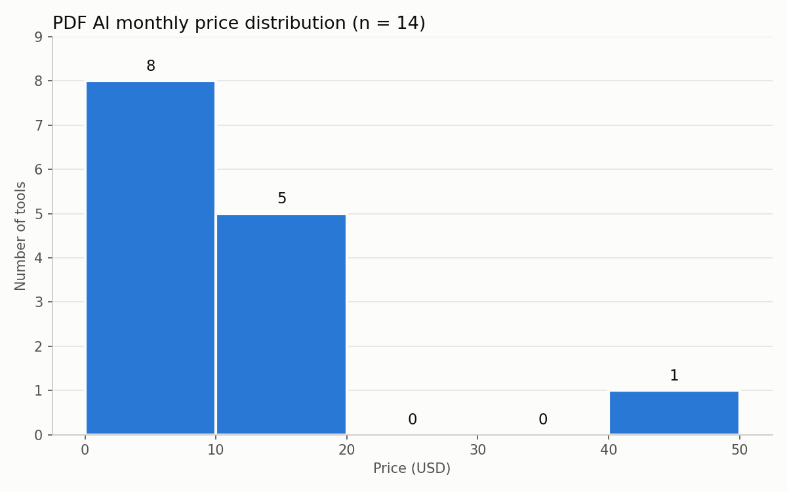
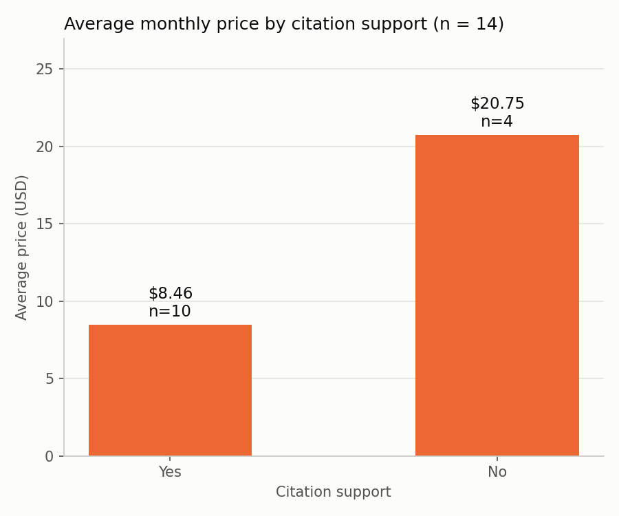

PDF AI 비교 도우미
불러오는 중…
근거


한계 - Citation No는 4개뿐이고 $49 항목이 포함되어 평균에 영향을 받으므로, Citation 여부 때문에 가격이 달라진다고 해석할 수 없음
출처 - iTechGuides 「Best AI PDF Assistants in 2026: Researched & Ranked」 · 2026-09-28 수집 · USD 월 시작 가격으로 비교 가능한 14개